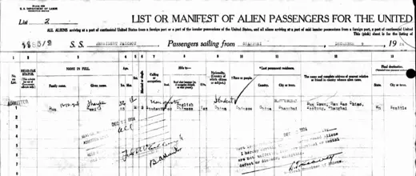

Kwei Dun in Seattle
访问原网页 ↗Visit original website ↗

S031 · Alex Jay / Chinese American Eyes · 2013-08；所收史料1924—1928
保存乘客名录、城市名录、指画演示、任教与Henry画廊展览报道。Preserves passenger and city-directory scans, finger painting demonstrations, teaching reports and Henry Gallery coverage.
馆藏图像与原文Archived images and documents
- 1924 入境船客名录 第一页1924 入境船客名录 第一页 I024
- 1924 入境船客名录 续页1924 入境船客名录 续页 I025
- 1924-12-25 Seattle Daily Times 人物报道1924-12-25 Seattle Daily Times 人物报道 I026
- 1925-03-01 Seattle Daily Times 俱乐部报道1925-03-01 Seattle Daily Times 俱乐部报道 I027
- 1926 Seattle City Directory1926 Seattle City Directory I028
- 1927-08-22 指画家任教报道1927-08-22 指画家任教报道 I029
- 1928-05-18 指画展览报道1928-05-18 指画展览报道 I030
- 1928-05-18 作画照片1928-05-18 作画照片 I031


来源页摘录Source-page excerpt
Chinese American Eyes: Kwei Dun in Seattle
Ancestry.com Passenger List Name: Kwei Dun Gender: Male, Single Age: 23 Calling or Occupation: Student Language: English, Chine...
原始网址Original URL
https://chimericaneyes.blogspot.com/2013/08/kwei-dun-in-seattle.html